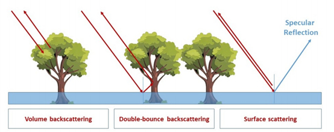
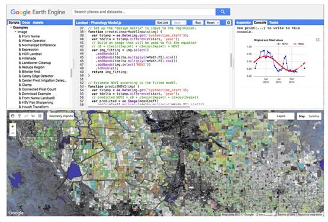

1 Week 1 Learning Diary
2 🌍 Week1
2.1 Summary
This week’s course introduces the basic concepts and methods of remote sensing (Remote Sensing). Remote sensing refers to the technology of obtaining information about the Earth from a distance, usually with the help of sensors on platforms such as satellites, aircraft or drones (Campbell and Wynne 2011). We discussed in depth the difference between active and passive remote sensing: active remote sensing uses signals emitted by itself (e.g. radar, lidar, etc.) and receives reflected information, while passive remote sensing relies on information reflected from sunlight hitting the surface, such as the Landsat and Sentinel satellites (Jensen 2009).
Remote sensing data usually have four types of resolution: spatial resolution (pixel size), spectral resolution (number of detected bands), temporal resolution (revisit period) and radiometric resolution (sensitivity of detected spectra). These resolutions determine the application range and accuracy of remote sensing data. At the same time, the electromagnetic spectral signature (Spectral Signature) of the Earth’s surface enables remote sensing technology to effectively differentiate between different feature types, such as vegetation, water bodies, and soils. In addition, we discussed that the acquisition of remote sensing data may be affected by atmospheric conditions such as clouds and haze, which makes it necessary to ensure the quality and validity of data through atmospheric correction and other means (Schowengerdt 2007).
2.2 Applications
Remote sensing technology has in fact long permeated every aspect of our lives, especially in the matter of responding to natural disasters, where its role is becoming increasingly important. For example, the synthetic aperture radar (SAR) in active remote sensing, which we mentioned in class, is particularly powerful in flood detection. Traditional optical satellites are easily blocked by clouds, but SAR is different, it can ‘penetrate’ the clouds to monitor the ground conditions around the clock, so it is particularly useful in emergency situations such as floods (Amitrano et al. 2024). A recent reading also highlights that with climate change and increased urbanisation, flooding is becoming more frequent, making it vital to be able to identify and monitor flooded areas quickly and effectively, a need that SAR data meets, and one that can help governments to respond quickly and allocate resources for disaster relief(Twele et al. 2016).

Source: Amitrano et al. (2024)
In addition to flood monitoring, passive remote sensing data are also widely used, such as the Landsat and Sentinel-2 satellites that we often hear about, and their applications in agriculture and the ecological environment are particularly numerous. As an example, satellite data can be used to calculate the vegetation index (NDVI), which helps the agricultural sector to more accurately assess the growth of crops and predict yields, and can even monitor changes in the ecological environment in real time. Moreover, using cloud computing platforms such as Google Earth Engine, people can easily analyse large-scale land cover changes and even monitor global ecological trends (Gorelick et al. 2017; Zhu and Woodcock 2014).

Source: Gorelick et al. (2017)
However, remote sensing is not a panacea, especially in cities and areas with vegetation cover, where SAR data can still be difficult to analyse. This is because buildings and vegetation in cities can cause complex signal reflections, making accurate identification of flooded areas tricky at times. Overall, however, the convenience and comprehensiveness provided by remote sensing data gives us more initiative in disaster response and environmental management, and the future development prospects are still worth looking forward to.
2.3 Reflection
The first week of remote sensing class made me realise right away that this technology is not just an abstract theory in the academic field, but a real tool that can make a difference in people’s lives. Of interest to me was the fact that active remote sensing (SAR), which we mentioned in class, has particularly prominent applications in natural disaster, especially flood monitoring. My previous understanding of remote sensing may have been limited to the simple application of satellite imagery, but I had no idea that it also has such great potential to address the risks associated with urbanisation and to protect people’s lives and property.
At the same time, I also noticed that although SAR can overcome the shortcomings of traditional optical images (such as the influence of cloud cover), there are still some challenges in its practical application. For example, the processing of SAR data in complex environments such as cities is still difficult, which reminds me that there are still quite a few practical problems to overcome between the development of the technology and the landing of the application. In addition, I am particularly interested in cloud platforms such as Google Earth Engine, which greatly reduces the threshold of remote sensing data analysis and allows us to quickly carry out large-scale environmental monitoring on a global scale, which is very attractive for both academic research and practical work.
One of the deepest feelings I got from this class is that remote sensing technology has really brought people closer to the Earth’s environment. Although there are still a lot of technical details that I need to learn in depth, I am already looking forward to what I can learn next and the role this knowledge can play in my future studies and career.